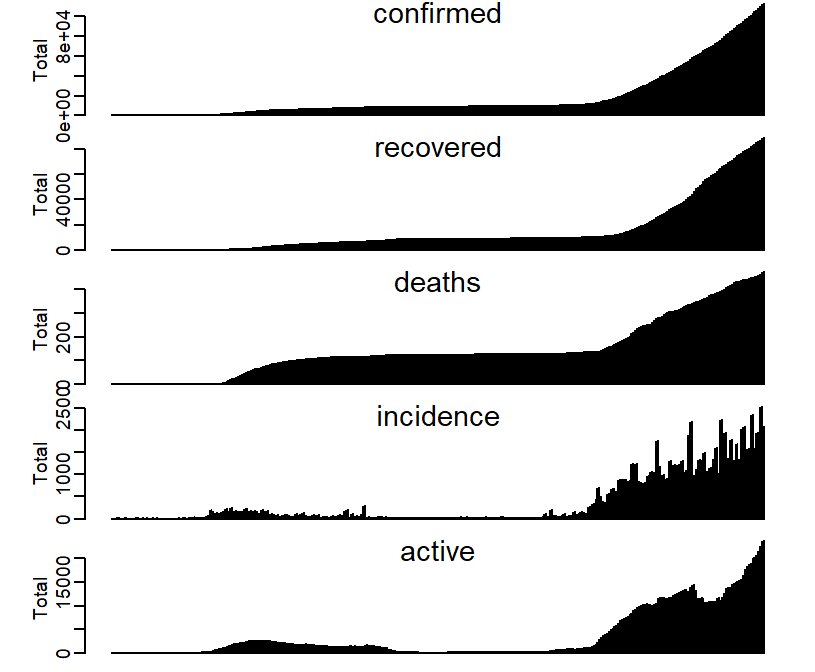
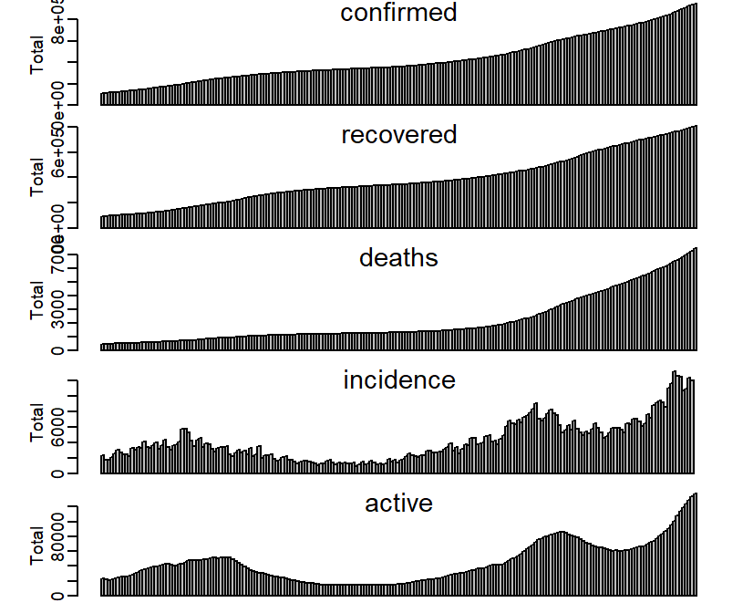

Here we show how to manipulate and visualize the data we can retrieved from COVID19 package which is created by COVID-19 Data Hub. First, we need to install the package COVID19:
install.packages("COVID19")In this packages, it consisted 190 countries data included Malaysia
library(COVID19)In this session, we only cover Malaysia dataset. To retrieve the dataset of Malaysia, we need to use the covid19() function:
x <- covid19("MYS")#MYS = Malaysia## We have invested a lot of time and effort in creating COVID-19 Data Hub, please cite the following when using it:
##
## Guidotti, E., Ardia, D., (2020), "COVID-19 Data Hub", Journal of Open
## Source Software 5(51):2376, doi: 10.21105/joss.02376.
##
## A BibTeX entry for LaTeX users is
##
## @Article{,
## title = {COVID-19 Data Hub},
## year = {2020},
## doi = {10.21105/joss.02376},
## author = {Emanuele Guidotti and David Ardia},
## journal = {Journal of Open Source Software},
## volume = {5},
## number = {51},
## pages = {2376},
## }
##
## To retrieve citation and metadata of the data sources see ?covid19cite. To hide this message use 'verbose = FALSE'.COVID-19 Data Hub provided many variable in the datasets, we can check it:
names(x)## [1] "id" "date"
## [3] "vaccines" "tests"
## [5] "confirmed" "recovered"
## [7] "deaths" "hosp"
## [9] "vent" "icu"
## [11] "population" "school_closing"
## [13] "workplace_closing" "cancel_events"
## [15] "gatherings_restrictions" "transport_closing"
## [17] "stay_home_restrictions" "internal_movement_restrictions"
## [19] "international_movement_restrictions" "information_campaigns"
## [21] "testing_policy" "contact_tracing"
## [23] "stringency_index" "iso_alpha_3"
## [25] "iso_alpha_2" "iso_numeric"
## [27] "currency" "administrative_area_level"
## [29] "administrative_area_level_1" "administrative_area_level_2"
## [31] "administrative_area_level_3" "latitude"
## [33] "longitude" "key"
## [35] "key_apple_mobility" "key_google_mobility"The details for each variable can review at here. Since the dataset did not provide number of incidence per day, now we need to compute the daily incidence based on the data. As we know the daily number of new cases is total number confirmed cases of today minus total number confirmed cases of yesterday. There are some of missing value on first few data of attribute confirmed, we can assume them as 0 in this scenario:
x$confirmed[is.na(x$confirmed)] <- 0Hence we can compute using the code below:
#Method 1
incidence <- c() #create an empty vector to hold all the incidence
for(i in 1:length(x$confirmed)){
temp <- x$confirmed[i+1]-x$confirmed[i]
incidence <- append(incidence,temp)
}
length(incidence)## [1] 546length(incidence)==length(x$confirmed)## [1] TRUEOr we can use the properties of data frame:
#Method 2
incidence <-tail(x$confirmed,-1) - head(x$confirmed,-1)
length(incidence)## [1] 545length(incidence)==length(x$confirmed)## [1] FALSEThe only difference between this two method is the length of output. We can leave the output like this or we can insert into the dataframe. Note that the length of every attributes in the data frame must be same. If using method 2, we need to insert NA last of incidence vector:
incidence[length(incidence)+1] <- NA
length(incidence)==length(x$confirmed)## [1] TRUEx$incidence <- incidenceNow we have new attributes in our dataset:
names(x)## [1] "id" "date"
## [3] "vaccines" "tests"
## [5] "confirmed" "recovered"
## [7] "deaths" "hosp"
## [9] "vent" "icu"
## [11] "population" "school_closing"
## [13] "workplace_closing" "cancel_events"
## [15] "gatherings_restrictions" "transport_closing"
## [17] "stay_home_restrictions" "internal_movement_restrictions"
## [19] "international_movement_restrictions" "information_campaigns"
## [21] "testing_policy" "contact_tracing"
## [23] "stringency_index" "iso_alpha_3"
## [25] "iso_alpha_2" "iso_numeric"
## [27] "currency" "administrative_area_level"
## [29] "administrative_area_level_1" "administrative_area_level_2"
## [31] "administrative_area_level_3" "latitude"
## [33] "longitude" "key"
## [35] "key_apple_mobility" "key_google_mobility"
## [37] "incidence"Since the dataset only provide total number of confirmed cases, recovered cases and deaths. Now let’s try to calculate the number of active cases using formula below and insert into dataframe x: \[
ac(t) = cc(t) - rc(t) - dc(t)
\] \[
\\where:
\\ac(t) = number\;of\;active\;cases\;at\;time\;t,
\\cc(t) = total\;number\;of\;confirmed\;cases\;at\;time\;t,
\\rc(t) = total\;number\;of\;recovered\;cases\;at\;time\;t,
\\dc(t) = total\;number\;of\;deaths\;at\;time\;t,
\\t =1,2,3,...,T
\]
Some values are missing in the attributes of recovered and deaths, we can assume those missing data as 0 in this scenario:
x$recovered[is.na(x$recovered)] <- 0
x$deaths[is.na(x$deaths)] <- 0Solution:
x$active <- x$confirmed - x$recovered - x$deaths
names(x)## [1] "id" "date"
## [3] "vaccines" "tests"
## [5] "confirmed" "recovered"
## [7] "deaths" "hosp"
## [9] "vent" "icu"
## [11] "population" "school_closing"
## [13] "workplace_closing" "cancel_events"
## [15] "gatherings_restrictions" "transport_closing"
## [17] "stay_home_restrictions" "internal_movement_restrictions"
## [19] "international_movement_restrictions" "information_campaigns"
## [21] "testing_policy" "contact_tracing"
## [23] "stringency_index" "iso_alpha_3"
## [25] "iso_alpha_2" "iso_numeric"
## [27] "currency" "administrative_area_level"
## [29] "administrative_area_level_1" "administrative_area_level_2"
## [31] "administrative_area_level_3" "latitude"
## [33] "longitude" "key"
## [35] "key_apple_mobility" "key_google_mobility"
## [37] "incidence" "active"head(x$active)## [1] 0 0 0 3 4 4tail(x$active)## [1] 108369 114053 119814 124593 128997 133703The dataset consists the data from year 2020 to 2021 July, let’s try to seperate the data with year:
x2020 <- x[x$date <= '2020-12-31',]
head(x2020)## # A tibble: 6 x 38
## # Groups: id [1]
## id date vaccines tests confirmed recovered deaths hosp vent icu
## <chr> <date> <dbl> <int> <dbl> <dbl> <dbl> <dbl> <int> <int>
## 1 MYS 2020-01-22 NA NA 0 0 0 NA NA NA
## 2 MYS 2020-01-23 NA NA 0 0 0 NA NA NA
## 3 MYS 2020-01-24 NA NA 0 0 0 NA NA NA
## 4 MYS 2020-01-25 NA NA 3 0 0 NA NA NA
## 5 MYS 2020-01-26 NA NA 4 0 0 NA NA NA
## 6 MYS 2020-01-27 NA NA 4 0 0 NA NA NA
## # ... with 28 more variables: population <int>, school_closing <int>,
## # workplace_closing <int>, cancel_events <int>,
## # gatherings_restrictions <int>, transport_closing <int>,
## # stay_home_restrictions <int>, internal_movement_restrictions <int>,
## # international_movement_restrictions <int>, information_campaigns <int>,
## # testing_policy <int>, contact_tracing <int>, stringency_index <dbl>,
## # iso_alpha_3 <chr>, iso_alpha_2 <chr>, iso_numeric <int>, currency <chr>,
## # administrative_area_level <int>, administrative_area_level_1 <chr>,
## # administrative_area_level_2 <lgl>, administrative_area_level_3 <lgl>,
## # latitude <dbl>, longitude <dbl>, key <lgl>, key_apple_mobility <chr>,
## # key_google_mobility <chr>, incidence <dbl>, active <dbl>tail(x2020)## # A tibble: 6 x 38
## # Groups: id [1]
## id date vaccines tests confirmed recovered deaths hosp vent icu
## <chr> <date> <dbl> <int> <dbl> <dbl> <dbl> <dbl> <int> <int>
## 1 MYS 2020-12-26 NA 3239706 103900 83414 451 NA NA NA
## 2 MYS 2020-12-27 NA 3257503 105096 84411 452 NA NA NA
## 3 MYS 2020-12-28 NA 3271880 106690 85592 455 NA NA NA
## 4 MYS 2020-12-29 NA 3291834 108615 86715 457 NA NA NA
## 5 MYS 2020-12-30 NA 3317646 110485 87460 463 NA NA NA
## 6 MYS 2020-12-31 NA 3344327 113010 88941 471 NA NA NA
## # ... with 28 more variables: population <int>, school_closing <int>,
## # workplace_closing <int>, cancel_events <int>,
## # gatherings_restrictions <int>, transport_closing <int>,
## # stay_home_restrictions <int>, internal_movement_restrictions <int>,
## # international_movement_restrictions <int>, information_campaigns <int>,
## # testing_policy <int>, contact_tracing <int>, stringency_index <dbl>,
## # iso_alpha_3 <chr>, iso_alpha_2 <chr>, iso_numeric <int>, currency <chr>,
## # administrative_area_level <int>, administrative_area_level_1 <chr>,
## # administrative_area_level_2 <lgl>, administrative_area_level_3 <lgl>,
## # latitude <dbl>, longitude <dbl>, key <lgl>, key_apple_mobility <chr>,
## # key_google_mobility <chr>, incidence <dbl>, active <dbl>x2021 <- x[x$date > '2020-12-31',]
head(x2021)## # A tibble: 6 x 38
## # Groups: id [1]
## id date vaccines tests confirmed recovered deaths hosp vent icu
## <chr> <date> <dbl> <int> <dbl> <dbl> <dbl> <dbl> <int> <int>
## 1 MYS 2021-01-01 NA 3371509 115078 91171 474 NA NA NA
## 2 MYS 2021-01-02 NA 3390804 117373 94492 483 NA NA NA
## 3 MYS 2021-01-03 NA 3414380 119077 97218 494 NA NA NA
## 4 MYS 2021-01-04 NA 3435694 120818 98228 501 NA NA NA
## 5 MYS 2021-01-05 NA 3462628 122845 99449 509 NA NA NA
## 6 MYS 2021-01-06 NA 3492902 125438 100578 513 NA NA NA
## # ... with 28 more variables: population <int>, school_closing <int>,
## # workplace_closing <int>, cancel_events <int>,
## # gatherings_restrictions <int>, transport_closing <int>,
## # stay_home_restrictions <int>, internal_movement_restrictions <int>,
## # international_movement_restrictions <int>, information_campaigns <int>,
## # testing_policy <int>, contact_tracing <int>, stringency_index <dbl>,
## # iso_alpha_3 <chr>, iso_alpha_2 <chr>, iso_numeric <int>, currency <chr>,
## # administrative_area_level <int>, administrative_area_level_1 <chr>,
## # administrative_area_level_2 <lgl>, administrative_area_level_3 <lgl>,
## # latitude <dbl>, longitude <dbl>, key <lgl>, key_apple_mobility <chr>,
## # key_google_mobility <chr>, incidence <dbl>, active <dbl>tail(x2021)## # A tibble: 6 x 38
## # Groups: id [1]
## id date vaccines tests confirmed recovered deaths hosp vent icu
## <chr> <date> <dbl> <int> <dbl> <dbl> <dbl> <dbl> <int> <int>
## 1 MYS 2021-07-15 13215121 1.60e7 880782 765800 6613 NA NA NA
## 2 MYS 2021-07-16 13621884 NA 893323 772542 6728 NA NA NA
## 3 MYS 2021-07-17 14002324 NA 905851 779171 6866 NA NA NA
## 4 MYS 2021-07-18 14347285 NA 916561 784949 7019 NA NA NA
## 5 MYS 2021-07-19 14772221 NA 927533 791388 7148 NA NA NA
## 6 MYS 2021-07-20 15071814 NA 939899 798955 7241 NA NA NA
## # ... with 28 more variables: population <int>, school_closing <int>,
## # workplace_closing <int>, cancel_events <int>,
## # gatherings_restrictions <int>, transport_closing <int>,
## # stay_home_restrictions <int>, internal_movement_restrictions <int>,
## # international_movement_restrictions <int>, information_campaigns <int>,
## # testing_policy <int>, contact_tracing <int>, stringency_index <dbl>,
## # iso_alpha_3 <chr>, iso_alpha_2 <chr>, iso_numeric <int>, currency <chr>,
## # administrative_area_level <int>, administrative_area_level_1 <chr>,
## # administrative_area_level_2 <lgl>, administrative_area_level_3 <lgl>,
## # latitude <dbl>, longitude <dbl>, key <lgl>, key_apple_mobility <chr>,
## # key_google_mobility <chr>, incidence <dbl>, active <dbl>Now we focus on year 2020, let’s us visualize some of the attributes:
attr_list <- c(5,6,7,37,38)#index of attribute
par(mfrow = c(5,1))
for(attrX in attr_list){
barplot(x2020[[attrX]],space=0,xlab = NA,ylab = 'Total')
mtext(names(x2020[attrX]),line=-1)
}
Now let’s try with same attributes for year 2021
Solution:
attr_list <- c(5,6,7,37,38)#index of attribute
par(mfrow = c(5,1))
for(attrX in attr_list){
barplot(x2021[[attrX]],space=0,xlab = NA,ylab = 'Total')
mtext(names(x2021[attrX]),line=-1)
}